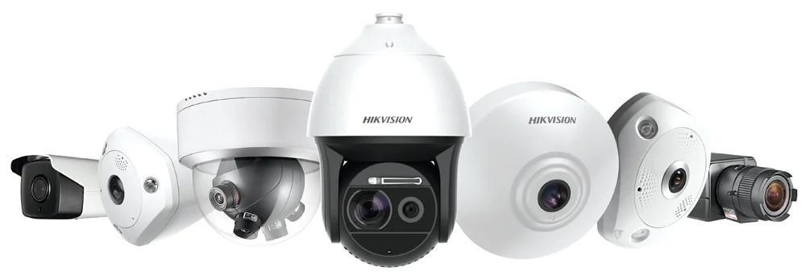

Hikvision
Videovigilancia para cobertura útil.
Seleccionamos cámaras, grabación y acceso remoto según los puntos que realmente necesitan control. La resolución, el lente y la iluminación responden a cada distancia, no a una cifra aislada.
Criterio: ver el evento con el detalle necesario y conservarlo durante el tiempo acordado.